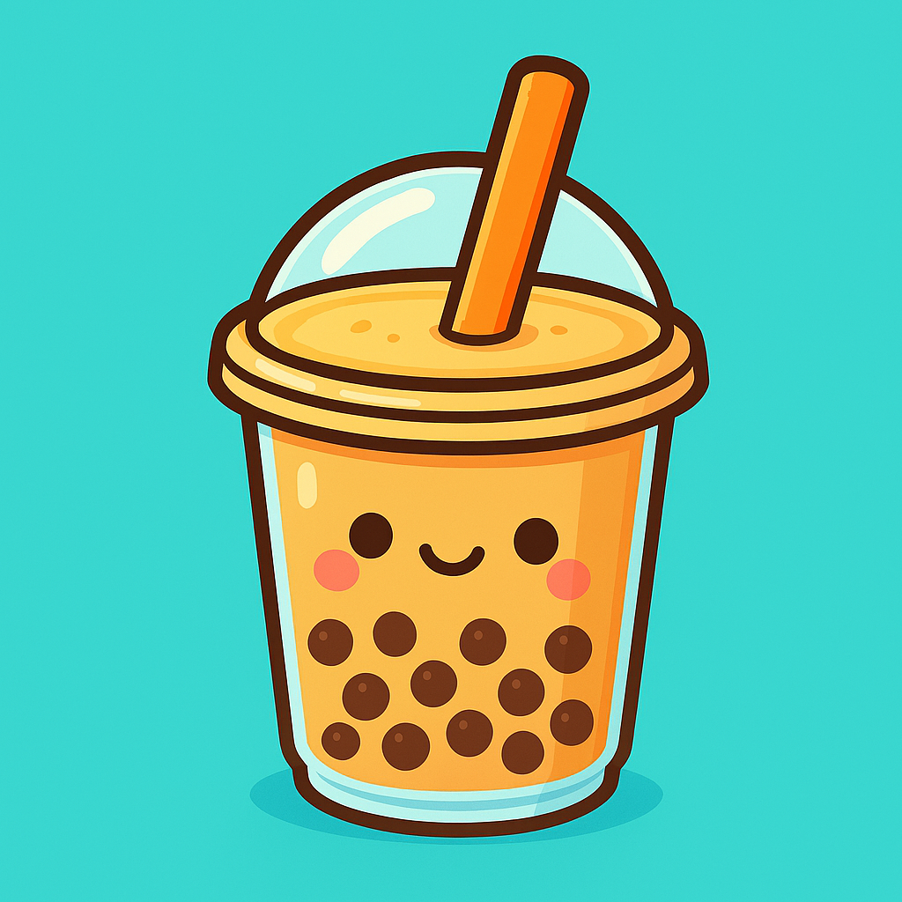

Also known as Boba Diary · 中文名:奶茶日记
Log every cup of bubble tea in seconds, watch your sugar and spending, find boba shops near you, and collect boba cards along the way. Free on iOS and Android.
Download for iOS Get it on Google PlayOrder your drink, open the app, log it in a few taps — flavor, size, sugar level, toppings, price, photo. Or just snap the receipt and let AI receipt scanning fill everything in.
Your log quietly becomes the interesting part: sugar and calorie estimates per drink, a monthly spending ledger, goals you set for yourself, and trend charts that show whether “less sugar this month” actually happened.
It’s a diary, not a scold. You decide what your boba habit should look like — the app just keeps honest notes.
Six things the app does for your milk tea life.
Flavor, size, sugar level, toppings, price and photo — logged in seconds, right at the counter.
Snap the receipt and the drink details fill themselves in. No typing with a straw in your mouth.
Per-drink sugar and calorie estimates, monthly totals, and trends you can actually act on.
Find boba shops around you, spot NEW openings in town, and log straight from the shop you're at.
Every drink you log can earn collectible boba cards — stamps, rarities and foils for your collection.
An in-app city newsletter with real local boba news, new shops and a home-boba tip — NYC and SF Bay to start.
Yes. Boba Tea (also listed as Boba Diary) is free to download and use on both iOS and Android.
No — Boba Tea is a real-life milk tea tracker, not a game. You log the bubble tea you actually drink, watch your sugar and spending, and find real boba shops near you. The boba cards you collect are stamps earned from your own drinks.
Every cup — flavor, size, sugar level, toppings, price and photo. The app turns your log into sugar and calorie estimates, a monthly spending ledger, goals, and trend charts. You can also snap a receipt and let AI fill in the details.
Yes. The Near Me tab shows boba shops around you, marks new openings in town, and lets you log a drink straight from the shop you're at.
Yes. The app is fully bilingual — English and Chinese (中文名:奶茶日记) — on both iOS and Android.
Download Boba Tea and start your boba log today.
Download for iOS Get it on Google Play